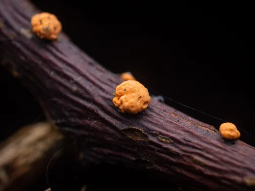

枯死细枝上长出珊瑚色小垫状物
剪桩上的粉橙色小垫能提示检查位置，还需区分菌体只长在旧枯木上，还是邻近活短枝也在枯死。

检查植株
查看阴处枯枝和旧剪口上的针头状鲑红色小垫，并找出枯皮与活枝的交界。拍照时纳入小枝与去年枝条的连接处。只拍垫状物特写，容易失去关键的分布线索。
区分相似表现
已枯死木段上的几个橙色小点不足以解释全冠衰弱。沿受害枝向基部寻找伤口及枯活边界。
现场处理
小侧枝已枯死时，在干燥天气按枝领位置干净修剪，避免留下可供真菌生长的长残桩。
后续复查
新梢展开时复查邻近短枝。如果更多枝梢萎缩，送检一段同时含健康与坏死组织的枝条。
值得单独记录的细节
苹果枝上若有珊瑚色小垫，春季萌芽时比较受害短枝及其下方的芽，记下位置最低的未萌芽点。
区分已经枯死和仍在抽叶的枝段
珊瑚色小垫可能首先出现在已经干死的细枝上。沿枝向内找到仍带饱满芽或叶片的位置，把这个交界也拍进去。若彩色小点只在去年枯枝上，而今年新梢均能伸长，复查重点是枯枝数有无增加；若交界继续后退，再调查冻伤、遮阴或其他导致衰弱的因素。